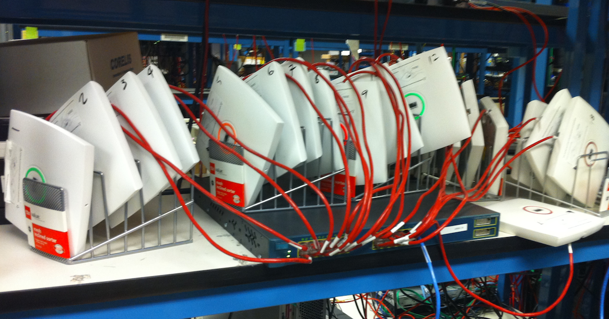
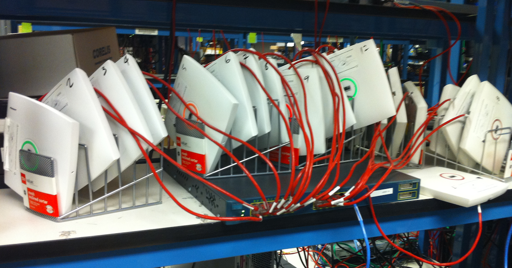

Skillset
Level 99: Good, but there is no cap on the levels of life.
Programming Languages
C/C++, Swift, Objective-C, Java (Android), Go, Python, Matlab, Basic, Bash Scripting, Git, Jira
Your first question is always,
What is your favorite language?
and of course its C.
What is your favorite language?
and of course its C.
System Experience
AWS, Azure, Windows, Linux, IOS(Cisco), Android, Apple iOS and OSX
Apple IOS is much more fun, but has nothing on Cisco's IOS when it comes to routing.
Data Science
Deep Learning NLU, Machine Learning, Product Analytics, Model Transparency
How many entities can you name?
UX & Design
Figma, Sketch, Conversational Interfaces, User Testing, Rapid Prototyping
Go with the flow.
Karson M. Miller
Carson's bandwidth rule defines the approximate bandwidth requirements of communications system components for a carrier signal that is frequency modulated by a continuous or broad spectrum of frequencies.

Product Leader specialized in SaaS,
Mobile Apps, and NLU technologies.
Mobile Apps, and NLU technologies.
Alternate: An attempt at not selling lemons.
20 Trace ln
Half Moon Bay, CA, 94803-2285
Half Moon Bay, CA, 94803-2285
T
516-384-5952
Don't forget the 1
E
karson.m.miller@gmail.com
Feel free to say hello at
karson@nack.in
karson@nack.in
W
nack.in
Did you think I would
have recursive links?
Think again
have recursive links?
Think again
Education
College is a refuge from hasty judgment.
Why not take advantage of it?
Why not take advantage of it?
Bachelor of Science in Electrical Engineering | Georgia Institute of Technology
I'm a Ramblin' Wreck from Georgia Tech, and a hell of an engineer
A helluva, helluva, helluva, helluva, hell of an engineer.
Like all the jolly good fellows, I drink my whiskey clear.
I'm a Ramblin' Wreck from Georgia Tech and a hell of an engineer.
Oh! If I had a daughter, sir, I'd dress her in White and Gold,
And put her on the campus to cheer the brave and bold.
But if I had a son, sir, I'll tell you what he'd do
He would yell, 'To hell with Georgia!' like his daddy used to do.
Oh, I wish I had a barrel of rum and sugar three thousand pounds,
A college bell to put it in and a clapper to stir it round.
I'd drink to all the good fellows who come from far and near.
I'm a ramblin', gamblin', hell of an engineer!
A helluva, helluva, helluva, helluva, hell of an engineer.
Like all the jolly good fellows, I drink my whiskey clear.
I'm a Ramblin' Wreck from Georgia Tech and a hell of an engineer.
Oh! If I had a daughter, sir, I'd dress her in White and Gold,
And put her on the campus to cheer the brave and bold.
But if I had a son, sir, I'll tell you what he'd do
He would yell, 'To hell with Georgia!' like his daddy used to do.
Oh, I wish I had a barrel of rum and sugar three thousand pounds,
A college bell to put it in and a clapper to stir it round.
I'd drink to all the good fellows who come from far and near.
I'm a ramblin', gamblin', hell of an engineer!
August 2009 - August 2012
Only 3 years give or take a few days.
Next lifetime I'll take my time.
Next lifetime I'll take my time.
Experience
In other words, physical experiences relate to observables. They need not involve modal properties nor mental experiences.
[ Google ] Product Manager
| Mountain View , CA | Apr 2022 - Today
Product Manager at Google, at the forefront of developing Google Search Labs across Android, iOS, and Chrome desktop. Key architect in evolving the Google Search app on iOS, integrating cutting-edge user-centric enhancements and enabling users to experience Google's latest AI features. Excels in strategic oversight and cross-platform integration, committed to advancing search technology and AI applications to enrich user interactions and search efficiency.
[ Polly.io ] Head of Product
| San Francisco, CA | Apr 2019 - Oct 2021
Polly Exchange
Created a secondary market platform for closed home loans.
Created a secondary market platform for closed home loans.
Created a first of its kind realtime secondary market platform for home loans. Built a 3 sided loan exchange to facilitate the aftermarket sale for billions of dollars of mortgages with participation of 95% of major US banks
and mortgage buyers. Managed and scaled a team of Product Managers, UX Designers, Eng Managers and Fullstack Developers through multiple rounds of funding and the mvp releases of 4 unique products on a single saas platform.
[ Salesforce ] Director of Product
| San Francisco, CA | Apr 2016 - Apr 2019
Einstein Bots
Einstein Bots uses deep learning AI to understand customers and provide an engaging customer service experience.
Salesforce Iot Cloud
Harness the power of the Internet of Things and turn the data generated by every one of your customers, partners, devices, and sensors into meaningful action. With IoT Cloud you can process massive quantities of data, build business rules with simple, intuitive tools, and engage proactively with customers in real time.
Einstein Bots uses deep learning AI to understand customers and provide an engaging customer service experience.
Salesforce Iot Cloud
Harness the power of the Internet of Things and turn the data generated by every one of your customers, partners, devices, and sensors into meaningful action. With IoT Cloud you can process massive quantities of data, build business rules with simple, intuitive tools, and engage proactively with customers in real time.
Created one of Salesforces' flagship AI & Automation products from POC to MVP and then multilingual GA. Managed 6 scrum teams (Core, Builder, Integrations, Runtime, Analytics, Data Science) creating scalable realtime deep learning
NLU Chatbot systems with enterprise grade UX and APIs.
[ RealmDb ] Senior Product Manager
| San Francisco, CA | Dec 2015 - Apr 2016
Realm.io
Realm (formerly tight.db) is a mobile database that enables its users to develop applications faster, develop applications that are fast, and craft amazing user experiences. Realm is a replacement for SQLite and Core Data. It can save users thousands of lines of code and weeks of work, and lets them craft amazing new user experiences. It is a Y Combinator company, headquartered in San Francisco.
Realm (formerly tight.db) is a mobile database that enables its users to develop applications faster, develop applications that are fast, and craft amazing user experiences. Realm is a replacement for SQLite and Core Data. It can save users thousands of lines of code and weeks of work, and lets them craft amazing new user experiences. It is a Y Combinator company, headquartered in San Francisco.
Y Combinator S11 | Exited - Bought by MongoDB, Inc.
Managed teams for Cocoa (iOS,OSX,WatchOS,TVOS), Java, ReactNative, Xamarin, and C++ releases. Realm is a mobile database that optimizes the developer experience by replacing ORMs and SQLite with a open source native library that uses far less memory, disk space, and battery life.
Managed teams for Cocoa (iOS,OSX,WatchOS,TVOS), Java, ReactNative, Xamarin, and C++ releases. Realm is a mobile database that optimizes the developer experience by replacing ORMs and SQLite with a open source native library that uses far less memory, disk space, and battery life.
[ Jobr ] Senior Product Manager
| San Francisco, CA | Jan 2015 - Dec 2015
jobrapp.com
Jobr is a mobile job discovery and matching platform that connects corporate recruiters and hiring managers with a rapidly growing base of talented candidates. Companies can connect with a wide range of hard-to-reach passive, neutral and active candidates who are leaders in their respective fields and have matriculated from top universities.
Jobr is a mobile job discovery and matching platform that connects corporate recruiters and hiring managers with a rapidly growing base of talented candidates. Companies can connect with a wide range of hard-to-reach passive, neutral and active candidates who are leaders in their respective fields and have matriculated from top universities.
Exited - Bought by Monster.com
Managed 2 mobile apps and releases on Android and iOS. Created a machine learning recommendation engine for a Go lang backend to maximize relevance and per user profitability. Featured on the iOS App Store front page and top 5 business apps.
Managed 2 mobile apps and releases on Android and iOS. Created a machine learning recommendation engine for a Go lang backend to maximize relevance and per user profitability. Featured on the iOS App Store front page and top 5 business apps.
[ Microsoft ] Program Manager
| Redmond, WA | Sep 2012 - Jan 2015
Microsoft Corporation (NASDAQ: MSFT) is an American multinational corporation headquartered in Redmond, Washington that develops, manufactures, licenses and supports a wide range of products and services related to computing. The company was founded by
Bill Gates and Paul Allen on April 4, 1975. Microsoft is the world's largest software maker measured by revenues. It is also one of the world's most valuable companies.
Microsoft was established to develop and sell BASIC interpreters for the Altair 8800. It rose to dominate the personal computer operating system market with MS-DOS in the mid-1980s, followed by the Microsoft Windows line of operating systems. The company's 1986 initial public offering, and subsequent rise in its share price, created an estimated three billionaires and 12,000 millionaires from Microsoft employees. Since the 1990s, it has increasingly diversified from the operating system market and has made a number of corporate acquisitions. In May 2011, Microsoft acquired Skype Technologies for $8.5 billion in its largest acquisition to date.
As of 2012, Microsoft is market dominant in both the PC operating system and office suite markets (the latter with Microsoft Office). The company also produces a wide range of other software for desktops and servers, and is active in areas including internet search (with Bing), the video game industry (with the Xbox and Xbox 360 consoles), the digital services market (through MSN), and mobile phones (via the Windows Phone OS). In June 2012, Microsoft announced that it would be entering the PC vendor market for the first time, with the launch of the Microsoft Surface tablet computer.
Microsoft was established to develop and sell BASIC interpreters for the Altair 8800. It rose to dominate the personal computer operating system market with MS-DOS in the mid-1980s, followed by the Microsoft Windows line of operating systems. The company's 1986 initial public offering, and subsequent rise in its share price, created an estimated three billionaires and 12,000 millionaires from Microsoft employees. Since the 1990s, it has increasingly diversified from the operating system market and has made a number of corporate acquisitions. In May 2011, Microsoft acquired Skype Technologies for $8.5 billion in its largest acquisition to date.
As of 2012, Microsoft is market dominant in both the PC operating system and office suite markets (the latter with Microsoft Office). The company also produces a wide range of other software for desktops and servers, and is active in areas including internet search (with Bing), the video game industry (with the Xbox and Xbox 360 consoles), the digital services market (through MSN), and mobile phones (via the Windows Phone OS). In June 2012, Microsoft announced that it would be entering the PC vendor market for the first time, with the launch of the Microsoft Surface tablet computer.
Managed cross app product feature teams for the initial release of Microsoft Office for iPad and iPhone. Supported the ongoing development of Microsoft Office for iPad, iPhone, Mac, and Microsoft OneNote for iOS and Mac. Created
a company wide iOS Dogfooding program supporting ~100K employees and 50+ Apps made at Microsoft as a 20% project.
Managed low level implementations of Office for Apple products.
-- Managing commutation with Apple Developers to fix OS level Radar bugs.
-- Driving Sandboxing and App Store adoption of MS Office.
-- Designing Apple specific UI while maintaining the look and feel of MS Office.
-- Developed a Testflight replacement the use Windows Security groups
Drove performance on self-host and retail Windows Phone.
-- Writing functional specifications for features and tools that helped align Windows Phone with the "One Windows" Vision.
-- Designing and executing a metric collection systems that enabled developers to monitor and debug performance issues on self-host and retail Windows Phones.
-- Managing commutation with Apple Developers to fix OS level Radar bugs.
-- Driving Sandboxing and App Store adoption of MS Office.
-- Designing Apple specific UI while maintaining the look and feel of MS Office.
-- Developed a Testflight replacement the use Windows Security groups
Drove performance on self-host and retail Windows Phone.
-- Writing functional specifications for features and tools that helped align Windows Phone with the "One Windows" Vision.
-- Designing and executing a metric collection systems that enabled developers to monitor and debug performance issues on self-host and retail Windows Phones.
[ Cisco ] Systems Engineer
| San Jose, CA | May 2010 - Aug 2011
Cisco Systems, Inc. (NASDAQ: CSCO) is an American multinational corporation headquartered in San Jose, California, United States, that designs, manufactures, and sells networking equipment.
Cisco's current portfolio of products and services is focused upon three market segments - Enterprise and Service Provider, Small Business and the Home. The solutions for each market are segmented into Architectures, which form the basis for how Cisco approaches each market.
Corporate market: Enterprise networking and Service Providers
-- Borderless networks: for their range of routers, switches, wireless systems, security systems, WAN acceleration, energy and building management systems and media aware networks.
-- Collaboration: IP video and phones, TelePresence, HealthPresence, Unified Communications, Call Center systems, Enterprise social networks and Mobile applications
-- Datacenter and Virtualization: Unified Computing, Unified Fabric, Data Centre Switching, Storage Networking and Cloud services.
-- IP NGN (Next Generation Networks): High-end routing and switching for fixed and mobile service provider networks, broadcast video contribution/distribution, entitlement and content delivery systems.
Small businesses
-- Routers and switches (including those for networks of smart meters)[35] Security and surveillance: IP cameras, data and network security solutions, etc.
-- Voice and conferencing solutions: VOIP phones and gateway-systems, WebEx, video conferencing
-- Wireless: WiFi Access points
-- Network storage systems
Home user
-- Linksys product line of access points, switches, etc.
-- Broadband: cable modems
Cisco's current portfolio of products and services is focused upon three market segments - Enterprise and Service Provider, Small Business and the Home. The solutions for each market are segmented into Architectures, which form the basis for how Cisco approaches each market.
Corporate market: Enterprise networking and Service Providers
-- Borderless networks: for their range of routers, switches, wireless systems, security systems, WAN acceleration, energy and building management systems and media aware networks.
-- Collaboration: IP video and phones, TelePresence, HealthPresence, Unified Communications, Call Center systems, Enterprise social networks and Mobile applications
-- Datacenter and Virtualization: Unified Computing, Unified Fabric, Data Centre Switching, Storage Networking and Cloud services.
-- IP NGN (Next Generation Networks): High-end routing and switching for fixed and mobile service provider networks, broadcast video contribution/distribution, entitlement and content delivery systems.
Small businesses
-- Routers and switches (including those for networks of smart meters)[35] Security and surveillance: IP cameras, data and network security solutions, etc.
-- Voice and conferencing solutions: VOIP phones and gateway-systems, WebEx, video conferencing
-- Wireless: WiFi Access points
-- Network storage systems
Home user
-- Linksys product line of access points, switches, etc.
-- Broadband: cable modems
Worked on wireless lan controllers and security research for intrusion detection system integration in the Wireless Networking Business Unit.
Some of my work at Cisco included.
-- Programming mobility and security modules for next generation wireless lan controllers.
-- Created and maintained code standards for all WNBU modules.
-- Performing unit testing on daily code updates.
-- Writing scripts to compare available console commands in IOS branches.
-- Executing security audits on inter device communications between IPS systems and WLCs
-- Programming mobility and security modules for next generation wireless lan controllers.
-- Created and maintained code standards for all WNBU modules.
-- Performing unit testing on daily code updates.
-- Writing scripts to compare available console commands in IOS branches.
-- Executing security audits on inter device communications between IPS systems and WLCs
[ Self Employed ] Security Auditor & Network Consultant
| New York, NY | 2007 - 2009
I'm a Cisco fan.


Performed standard penetration tests and gave security advisement for small businesses. Additionally setup and serviced switches and servers for small businesses in the Greater New York area.
My favorite corporate pitch "maximize the value of your current network infrastructure by identifying risks and opportunities, analyzing approaches, and recommending solutions to optimize your network."
-Juniper Networks
-Juniper Networks
[ Pace University ] Computer Vision Researcher
| New York, NY | 2006 - 2007
Helping robots see whats right in front of them.
Worked on a minimalistic computer vision program at Pace University Robotics Laboratory under the direction of Professor Paul Benjamin.
I worked in a subsystem that could very efficiently pre-classify objects for more specific object recognition software.
[ GNPD ] Lighting Director
| Great Neck, NY | 2007 - 2009
"The goggles, they do NOTHING"
Designed and setup lights and wiring, programmed and ran a lighting control boards at Great Neck Park District's Steppingstone Waterside Theater. Featured such performances as Peter Duchin and Orchestra, Marilyn Michaels and
Sha Na Na.
Some of my duties included, physical light deployment, power requirements, control board programming, and overall design and execution.
Past Jobs
| 2006 - 2008
Big Brother Volunteer
| New York, NY 2007 - 2008
Helped setup and teach Big Brother families about computers.
Math Tutor
| Great Neck, NY 2006 - 2007
Tutored several 9th and 6th grade students in high school and middle school math.
Research, Awards, and Patents
US Patent - US11010558B2
| San Francisco, CA | 2021
Salesforce
Temporary slots for storing chat data
This disclosure relates to configuration tools for interactive agents, sometimes referred to as bots, chatbots, virtual robots, or talkbots. Such interactive agents utilize slots for organizing and storing data received as inputs and displayed as outputs.
These slots can be configured such that a slot is temporary and does not persist beyond its source dialog. Slots can also be configured such that a slot is pre-populated with information contain in incoming passed parameters.
US Patent - US10885079B2
| San Francisco, CA | 2021
Salesforce
Voice-activated events management system
Disclosed herein are system, method, and computer program product embodiments for providing voice-activated events management. An embodiment operates by receiving an audio-formatted query through an application associated with an event. A first user ID,
registered with the event, is determined to be associated with the mobile device. It is determined whether the query is an event query or a user query based on one or more keywords. Based on the determination that the query
is either the event query or the user query, the answer to the event query is determined from data retrieved over a network, or the answer to the user query is determined from the locally stored data at the mobile device.
The determined answer to the query is provided via the application operating on the mobile device.
Award - Department of Defense SMART Scholarship
| Atlanta, GA | 2010 - 2011
Way too much paperwork.
SMART scholars receive full tuition, annual stipends, and guaranteed employment.
Lets just say that they never say anything.
Research - Automated Wired Equivalent Privacy and RC4 Encryption Protection Through 802.11 Wireless Packet Injection
| Great Neck, NY | 2008 - 2009
Simply this is just a standalone WIPs(wireless Intrusion Preservation) system that took an aggressive approach.
-2nd Place, ISEF, Electrical Engineering
| International Science and Engineering Fair Reno, NV
Take a look at the others.
-1st Place and Best in Category, LISEF, Electrical Engineering
| Long Island Science Fair
Fun Fact: Long Island is one of the largest sources for high school based research.
-Finalist, JSHA National Competition
| Junior Science and Humanities Symposia
-Club Scholarship Award
| Georgia Tech Alumni Association
Got to interview in the Bloomberg building in NYC. So cool.
Research - Rapid Generic Object Recognition Through Virtual Environment Mesh Comparison
| Great Neck, NY | 2007-2008
Go see research assistant at the top of the page.